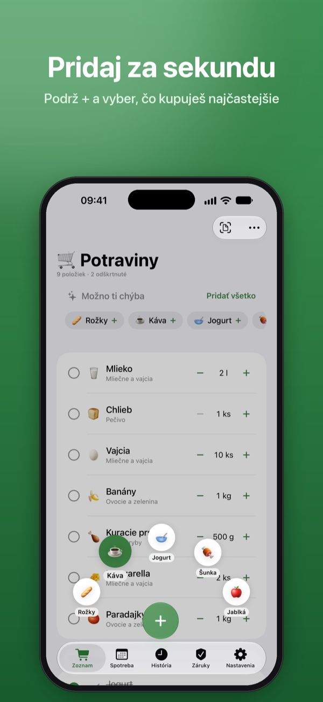
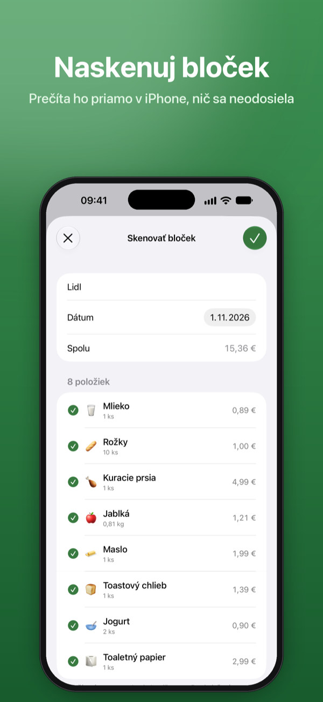
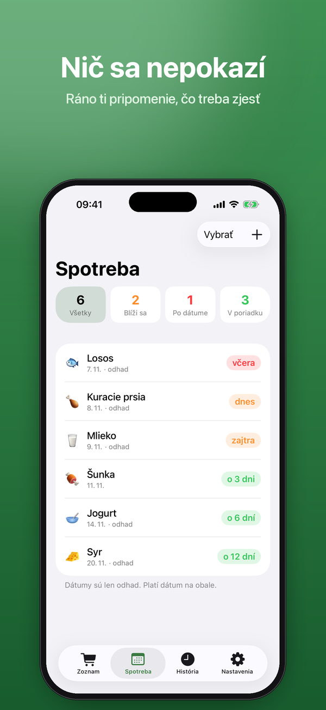
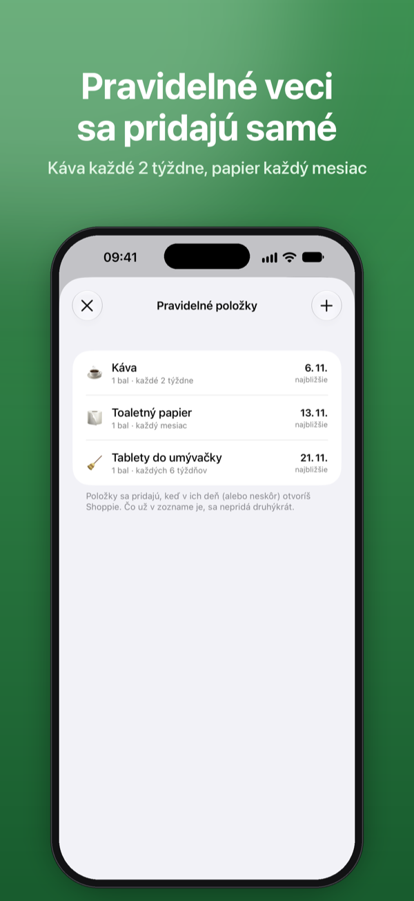
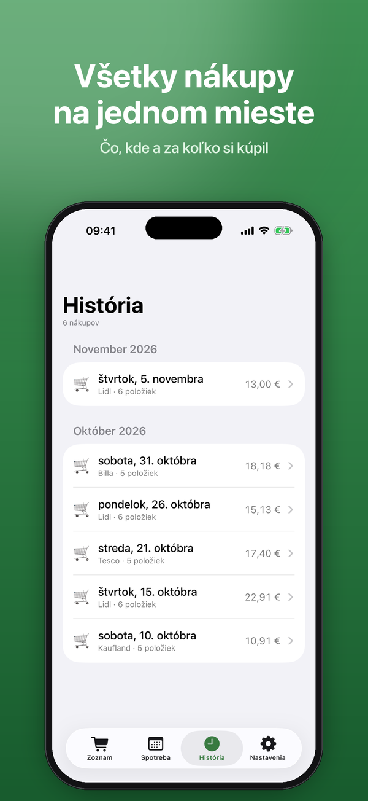

Ako to vyzerá






Čo Shoppie vie
Rýchle pridávanie
Ťuknite na + a napíšte, čo treba. Shoppie pozná asi 540 bežných produktov a sám ich zaradí do kategórie. Pridáte aj množstvo.
Koliesko obľúbených
Podržte + a vyberte z kolieska, čo kupujete najčastejšie. Čo koliesko ponúka, si nastavíte sami.
Vie, čo vám dochádza
Shoppie sa učí z vašich nákupov a navrhne, čo asi treba kúpiť.
Sken bločku
Odfoťte bloček a Shoppie rozpozná produkty aj ceny vrátane zliav. Priamo v iPhone, aj offline.
Spotreba
Kúpené potraviny sa objavia samy aj s dátumom spotreby. Ráno vám pripomenie, čo treba zjesť, a potraviny po dátume môže sám odstrániť.
Pravidelné položky
Káva každé 2 týždne, papier každý mesiac. V zvolený deň sa pridajú do zoznamu samy.
Záruky
Záruky aj s fotkou bločku na jednom mieste. Pred koncom záruky dostanete pripomienku.
Spoločná domácnosť
Pozvite rodinu cez iCloud. Zmeny v zoznamoch vidia všetci hneď.
História a viac zoznamov
Všetky nákupy s obchodom a počtom položiek. Potiahnutím doprava položku znova pridáte. Zoznamov môžete mať viac.
Navrhnuté aj pre iPhone Duo
Posúvajte ďalej a rozložte ho. Shoppie sa z vonkajšieho displeja presunie na veľký vnútorný displej.
Na rozloženom iPhone Duo využije Shoppie celý veľký vnútorný displej.
A ešte
- Slovenčina, čeština, angličtina
- Tmavý režim
- Veľké písmo a VoiceOver
- Režim na šírku
- iPhone Duo
- Synchronizácia cez iCloud
- Úvodný sprievodca s animáciami
- Bez reklám a registrácie
Vaše údaje patria len vám
Shoppie nezbiera žiadne údaje. Žiadne účty, reklamy ani sledovanie. Všetko je vo vašom iPhone a vo vašom iCloude.
Ochrana súkromiaStiahnite si Shoppie
Shoppie je dostupný v App Store pre iPhone. Zadarmo, bez reklám a bez registrácie.